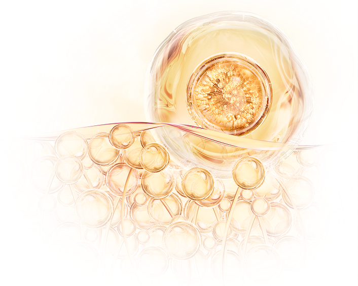

脂肪細胞除了是能量的儲藏庫，
更是富含間質幹細胞(MSCs)的寶藏。
生之寶透過專業的細胞分離與培養技術，
將其中的間質幹細胞(MSCs)加工凍存，
是目前最方便且快速的再生醫療黑科技。
自體脂肪幹細胞屬具有強大的多向分化潛能，
可轉變成骨細胞、軟骨細胞、脂肪細胞等。
相較於其他來源，
自體脂肪幹細胞的數量充足、來源方便，
取自自身且不存在排斥疑慮，
是再生醫學與組織修復的重要資源，
常用於治療退化性膝關節炎。
自體脂肪幹細胞 ADSCs
ADSCs

為什麼要儲存自體脂肪幹細胞 WHY
隨著年齡增加，體內幹細胞的數量與活性會逐漸下降。
透過保存自體脂肪幹細胞，
能在年輕健康時預留最佳狀態的細胞，
在需要用時為自己的未來多留一份準備。
這是一份「為自己投資」的選擇，
也是未來健康的一份保障。
立即儲存
透過保存自體脂肪幹細胞，
能在年輕健康時預留最佳狀態的細胞，
在需要用時為自己的未來多留一份準備。
這是一份「為自己投資」的選擇，
也是未來健康的一份保障。
WHY
自體脂肪幹細胞 儲存流程 PROGRESS
自體脂肪幹細胞儲存，
是儲備未來健康中最為方便的一種方式。
透過專業醫師以微創方式採集自體脂肪組織，
於全程無菌且低溫中送至生之寶專業實驗室，
經由專利技術分離、純化、培養出需要的幹細胞，
並進行嚴格的品質、活性與安全性檢測。
生之寶採用專利保存技術，
將細胞保存於超低溫的液態氮環境並採獨立進出，
確保長期穩定與功能完整。
全程搭配24小時監控與不斷電系統搭配，
讓每一份細胞都安全且保證活性足夠應用。
當未來有醫療或保健需求時，
即可解凍使用並保證活性高達99%以上，
為再生醫療與健康管理提供堅實後盾。
最常應用之適用症：退化性關節炎
立即儲存
是儲備未來健康中最為方便的一種方式。
透過專業醫師以微創方式採集自體脂肪組織，
於全程無菌且低溫中送至生之寶專業實驗室，
經由專利技術分離、純化、培養出需要的幹細胞，
並進行嚴格的品質、活性與安全性檢測。
生之寶採用專利保存技術，
將細胞保存於超低溫的液態氮環境並採獨立進出，
確保長期穩定與功能完整。
全程搭配24小時監控與不斷電系統搭配，
讓每一份細胞都安全且保證活性足夠應用。
當未來有醫療或保健需求時，
即可解凍使用並保證活性高達99%以上，
為再生醫療與健康管理提供堅實後盾。
最常應用之適用症：退化性關節炎
PROGRESS